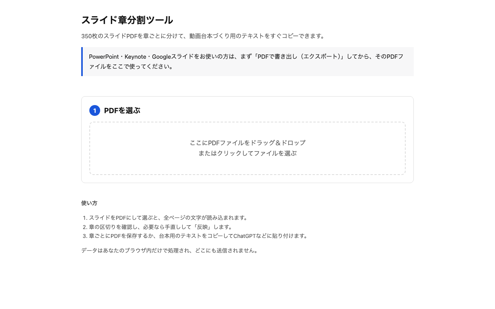
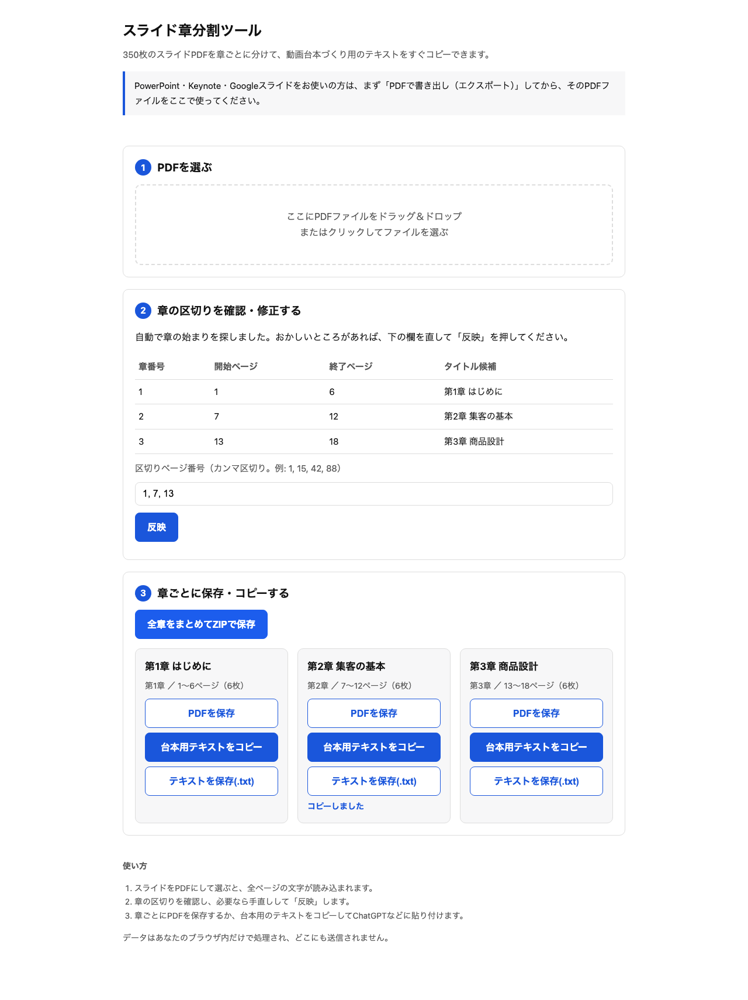

PDF化したスライドをアップロードするだけで、章の区切りを自動検出し、章ごとのPDF保存・台本用テキストのコピー・ZIP一括保存ができます。データはブラウザの中だけで処理され、外部には一切送信されません。

ツールの初期画面。PDFをドラッグ&ドロップするだけで解析が始まります。
つまり①は、②の機能に組み込まれた「台本用テキストをコピー」ボタンで対応しています。別々の作業ではなく、1つの流れの中で両方解決します。
後日判明：「BREW」はVREW（動画編集・AI読み上げソフト）でした。以下の資料はVREW前提に更新済みです。
操作を覚えたい方、この先を自動化したい方、社内で確認・共有したい方、それぞれ向けの資料をまとめました。
最初に開く超簡単な1枚。実物の数字と手順だけ。
開く →練習用PDFで3分。画面ごとに1アクション。
開く →PDFを置いて一言頼むだけにする計画と、AIに渡す手順書。
開く →あなたのAIに貼るだけ。
開く →チェックを付けて、そのまま送り返せます。
開く →台本を貼ると「STEP1→ステップ1」などの誤読候補を直して、読み上げ用のテキストにします。
開く →半自動（今すぐ）・自動操作（検証中）・VREWを使わない完全自動を比較。
開く →実際の操作をそのまま録画しています。編集・演出は加えていません。
確定した章ごとにカードが並び、それぞれ「PDFを保存」「台本用テキストをコピー」ができます。まとめて欲しい場合はZIP一括保存も可能です。

今回の検証で実際に使用した入力PDF（18ページ）と、そこから生成された出力ファイルです。すべて実物ですので、そのままダウンロードして開けます。
| 種類 | ファイル |
|---|---|
| 入力（18ページ） | input_sample_ja.pdf |
| 出力：第1章 はじめに | 01_第1章 はじめに.pdf ／ 01_第1章 はじめに.txt |
| 出力：第2章 集客の基本 | 02_第2章 集客の基本.pdf ／ 02_第2章 集客の基本.txt |
| 出力：第3章 商品設計 | 03_第3章 商品設計.pdf ／ 03_第3章 商品設計.txt |
| まとめてダウンロード | 章ごとスライド一式.zip（PDF3本＋テキスト3本を同梱） |
18ページの入力PDFが、3つの章に自動検出され、出力6ファイル（章ごとのPDF3本＋テキスト3本）とZIP1本が生成されました。headless Chromiumでの実測でコンソールエラーは0件です。
以下は研修スライド「第2章 集客の基本」（全6ページ）の内容です。 この内容をもとに、受講生向けの動画ナレーション台本を作ってください。 条件: 話し言葉／1ページごとに区切る／専門用語は初出で一言補足／全体で約6分の長さ。 --- 【ページ1】 第2章 集客の基本 【ページ2】 スライド2: 本文の内容です。 【ページ3】 スライド3: 本文の内容です。 【ページ4】 スライド4: 本文の内容です。 【ページ5】 スライド5: 本文の内容です。 【ページ6】 スライド6: 本文の内容です。
実物ファイル：script_ch2_clipboard.txt